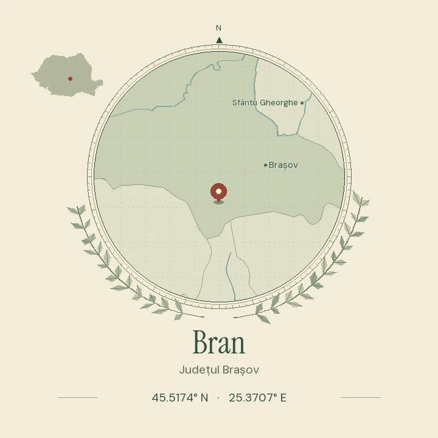
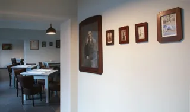
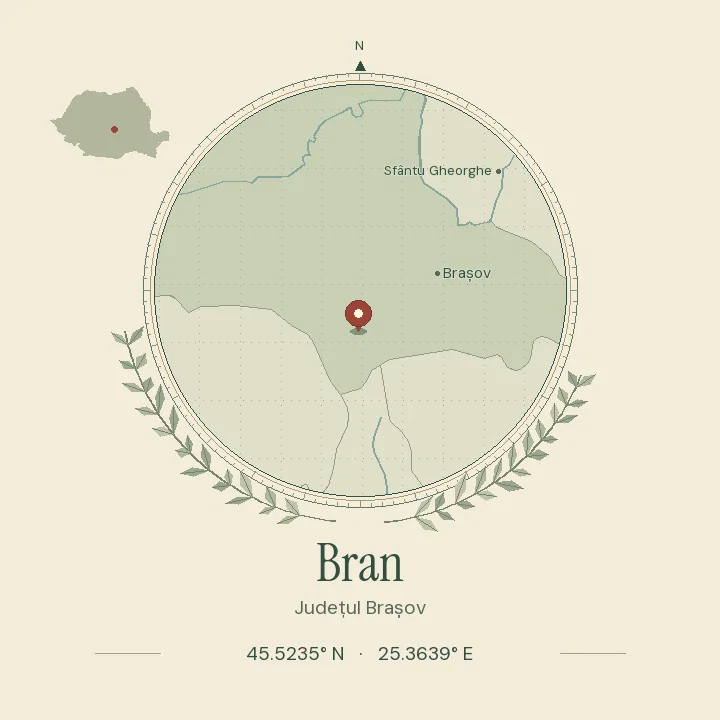
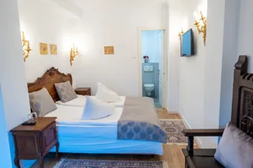
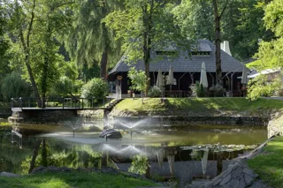
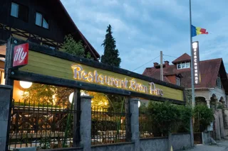
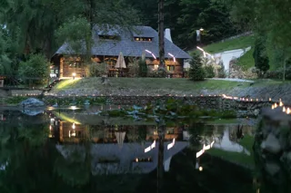

Locații de nuntă în Bran
- locații în director
- 13
- cu cazare în registrul SITUR
- 4
- medie ponderată Google
- 4,3 / 5
- evaluări Google
- 124.843
Cum alegi o locație în Bran
În Bran poți începe comparația cu Vila Vibrant (vilă), Green Resort Bran (casă de vacanță), Micul Castel (cazare în regim hotelier). Aceste proprietăți apar în primele poziții când luăm în calcul împreună nota și numărul de evaluări Google. Salvează adresele care vă interesează pentru a le așeza apoi alături în fișa de comparare a ofertelor.
În fișele proprietăților poți compara dotări concrete la Vila Vibrant (grădină, terasă, cazare), Green Resort Bran (terasă, cazare). Pentru oferta de nuntă, întreabă ce spații și servicii dintre cele prezentate intră în rezervarea privată pentru data voastră.
Dacă vin rude de departe, Conacul Törzburg are o unitate de cazare asociată în registrul SITUR. Înregistrarea pentru Conacul Torzburg cuprinde 18 locuri de dormit în 7 spații de cazare. Întreabă câte camere pot fi păstrate pentru aceeași noapte înainte să trimiți invitaților detaliile de rezervare.
Dacă vrei să vezi două proprietăți în aceeași zi, poți continua de la Casa Centiu - Restaurant Bran spre Belvedere International Bran - Piscina la munte cu cazare din Predeluț. Punctele lor sunt la 0,5 km în linie dreaptă. Deschide traseul înainte să fixezi ora celei de-a doua vizite, mai ales dacă grupul se deplasează cu autocarul.
Locații pentru vizionare
Ordinea ține cont de nota Google și de numărul evaluărilor. Cum calculăm ordinea

Fotografie a locației · Sursa fotografiei Bran · Vilă
Vila Vibrant
Vila Vibrant din Bran are camere spre curte și grădină, terasă și un apartament cu două camere. Aflați ce oferă cazarea pentru familia mirilor.
Strada Valea Porţii 220, 507025 Bran+40 742 376 542
Fotografie a locației · Sursa fotografiei Bran · Casă de vacanță
Green Resort Bran
Green Resort Bran oferă case cu terasă, curte și grătar individual. Comparați configurațiile de cazare pentru familiile venite la cununie.
Strada Branului nr 47, 505800 Bran+40 748 120 845
Hartă ilustrată Bran · Cazare în regim hotelier
Micul Castel
Un călător descrie Micul Castel ca fiind retras la câteva minute de drumul principal care duce la castelul din Bran.
Strada General Traian Moșoiu 2, 507025 Bran+40 742 044 598
Fotografie a locației · Sursa fotografiei Bran · Hotel
Conacul Törzburg
Conacul Törzburg are două terase lângă Castelul Bran, restaurant, bar și camere cu vedere la castel. Descoperiți diferențele dintre spații.
Sextil Pușcariu nr.3, 507025 Bran, Brașov+40 722 721 724
Fotografie a locației · Sursa fotografiei Bran · Restaurant
Casa Centiu - Restaurant Bran
Casa Cențiu are restaurant tradițional cu terasă, grădină și două pensiuni lângă Bran. Vedeți câte persoane pot rămâne peste noapte și regulile casei.
Strada Pe Țarină 58, 507025 Bran+40 721 920 380
Hartă ilustrată Bran · Pensiune
Garden Retreat Bran
La Garden Retreat Bran, casa Keyhouse se închiriază integral și are trei dormitoare, curte și loc de joacă. Aflați ce trebuie discutat pentru o cununie.
Strada Predeluț 72, 507025 Bran+40 745 190 710
Fotografie a locației · Sursa fotografiei Bran · Pensiune
Contele Vladimir
Pensiunea Contele Vladimir din Bran-Sohodol are restaurant românesc și internațional, bar și terasă cu vedere la munți. Vedeți accesul și oferta.
Strada Reitești 61, 507025 Bran+40 771 104 702
Fotografie a locației · Sursa fotografiei Bran · Hotel
Casa din Bran
O relatare despre Casa din Bran vine de la un grup repartizat în mai multe camere, care a întâmpinat probleme cu încălzirea și băile în timpul șederii.
Strada General Traian Moșoiu 15-19, 507025 Bran+40 741 236 557
Fotografie a locației · Sursa fotografiei Bran · Castel
Castelul Bran
Castelul Bran primește evenimente private în curtea interioară și în salonul de muzică al reginei Maria. Aflați capacitățile pentru ceremonie.
Strada General Traian Moșoiu 24, 507025 Bran+40 268 237 700
Fotografie a locației · Sursa fotografiei Bran · Restaurant
Bran Parc
Restaurant cu decor tradițional și șemineu în Vila Reit din Bran, 4,2 din 1.399 de evaluări. Papanași lăudați, dar și reclamații la gătit și parcare.
Vila Reit, Strada Sextil Pușcariu 23, 507025 Bran+40 721 578 683
Hartă ilustrată Bran · Local pentru evenimente
TeamBuilding, Cazare Bran
TeamBuilding, Cazare Bran, Bran. O recenzie despre proprietatea din Bran vine de la cineva aflat aici cu echipa de la serviciu.
Strada Predeluț 83, 112H, 507026 Bran+40 722 609 069
Fotografie a locației · Sursa fotografiei Bran · Hotel
Hanul Bran
Hanul Bran are o sală de evenimente pentru aproximativ 200 de persoane, restaurant cu preparate locale, terasă și cazare lângă castel.
Strada General Traian Moșoiu 4, 507025 Bran+40 268 236 556
Fotografie a locației · Sursa fotografiei Bran · Restaurant
Restaurantul Castelului Bran
Casa de Ceai a reginei Maria, la poalele Castelului Bran, servește preparate românești și europene. Descoperiți meniul și accesul la restaurant.
Strada General Traian Moșoiu 24, 507025 Bran+40 749 121 120
Întrebări despre locațiile din Bran
Unde pot dormi invitații în Bran?
În registrul de cazare SITUR găsim Conacul Törzburg (18 locuri de cazare), Garden Retreat Bran (22 de locuri de cazare), Contele Vladimir (24 de locuri de cazare). Verifică ce camere sunt libere pentru noaptea evenimentului.
Ce proprietăți din Bran au grădină sau terasă?
Vila Vibrant (grădină, terasă, foișor); Green Resort Bran (terasă); Conacul Törzburg (grădină). Cere administratorului condițiile de folosire pentru o petrecere privată.
Care locație din Bran are cele mai multe evaluări Google?
Castelul Bran are 115.361 de evaluări în profilul Google folosit la documentare. Evaluările acoperă și alte experiențe la proprietate, inclusiv vizitele fără eveniment.
Unde apare o intrare accesibilă în Bran?
Profilurile Google indică o intrare accesibilă la Conacul Törzburg, Casa Centiu - Restaurant Bran, Castelul Bran. Pentru o cununie în exterior, cere detalii despre traseul dintre intrare și zona cu scaune.
Ce alte localități pot include într-o vizionare lângă Bran?
Cele mai apropiate adrese comparate pe hartă sunt în Predeluț, Șimon, Moieciu de Jos. Găsești mai jos distanțele dintre proprietățile folosite pentru această comparație.
Vizionări în apropiere
- Predeluț · 2 locații. Între Casa Centiu - Restaurant Bran și Belvedere International Bran - Piscina la munte cu cazare sunt 0,5 km în linie dreaptă.
- Șimon · 3 locații. Între Vila Vibrant și Brandeberg Pensiune & Restaurant sunt 2,4 km în linie dreaptă.
- Moieciu de Jos · 4 locații. Între Castelul Bran și Garden Resort by Brâncoveanu sunt 3,8 km în linie dreaptă.
Alte adrese din aceeași unitate administrativă
Belvedere International Bran - Piscina la munte cu cazare (Predeluț), Brandeberg Pensiune & Restaurant (Șimon), Conacul Boieresc (Șimon), Garden Retreat Junior (Predeluț), Hillden Boutique Cazare &Restaurant (Șimon).